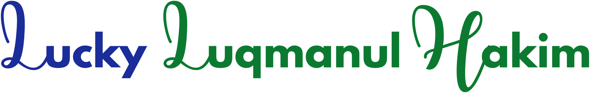

halo, selamat datang di ruang kecil saya

Mahasiswa Pendidikan Ilmu Komputer · Frontend Developer
Saya mahasiswa Pendidikan Ilmu Komputer Universitas Pendidikan Indonesia yang tertarik pada pengembangan web, UI/UX, dan penulisan teknis. Saya senang mengubah ide menjadi pengalaman digital yang rapi, interaktif, dan mudah digunakan.
Bagi saya, desain dan kode berjalan beriringan. Keduanya membutuhkan rasa ingin tahu, ketelitian, dan keberanian untuk terus mencoba hal baru.
NIM 2502736
Kampus UPI Bandung
Fokus Web · UI/UX · Menulis